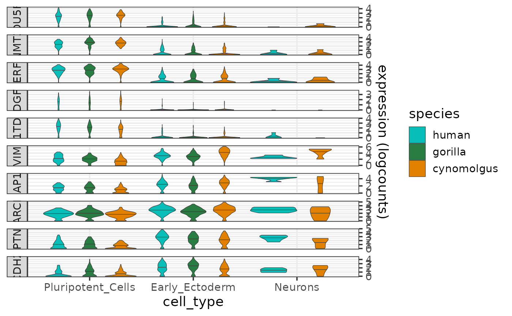

Plots the expression distributions of one or more genes per cell type and species, and thus allows the expression patterns to be visually compared across species.
Usage
plotExprViolin(
genes,
sce,
cell_type_column = "cell_type",
species_colors = NULL,
font_size = 14
)Arguments
- genes
Character vector, the names of the genes for which the expression profiles should be plotted.
- sce
SingleCellExperimentobject containing the expression data (raw counts, logcounts and metadata) for all network genes. Required metadata columns:- species
Character, the name of the species.
- {{cell_type_column}}
Character, cell type annotation.
- cell_type_column
Character, the name of the cell type annotation column in the metadata of
sce.- species_colors
Character vector, colors per species.
- font_size
Numeric, font size (default: 14).
Value
A violin plot as a ggplot object showing the expression distributions of the input genes per cell type and species.
Details
The function produces a violin plot of expression levels per cell type and species, faceted by gene. The colors for the species can be controlled by the parameter species_colors.
The species and cell type information are taken from the metadata slot of the input sce object, and the expression data are taken from the logcounts assay of the input sce object.
See also
Other functions to plot gene expression profiles:
plotExprAlongPseudotime(),
plotExprHeatmap(),
plotSumExprHeatmap(),
plotSumExprLine()
Examples
plotExprViolin(c("POU5F1","DNMT3B","TERF1","TDGF1","L1TD1","VIM","MAP1B","MARCKS","PTN","CDH2"),
sce)
